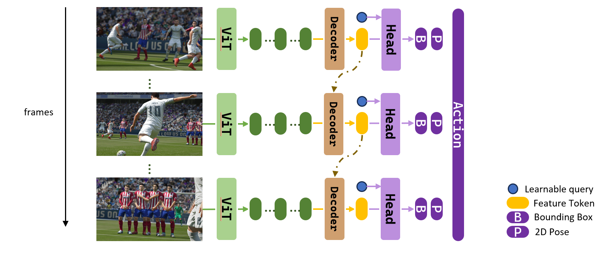

Coach is the first unified perception model in sports, including tracking, pose estimation and action recognition.

We are waiting for you! We currently have 3 Ph.D. students, 2 master students, 4 undergradutes with 2 professors as advisor. We plan to have several (2-5) more undergradutes involved.
Contact Prof. Wang or me (wchai@uw.edu) if you are interested in this project.